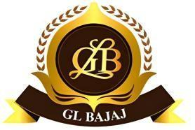
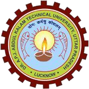
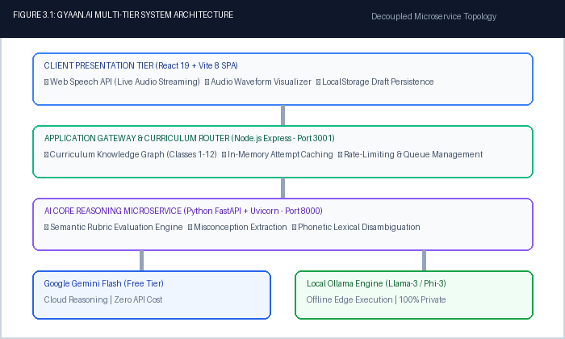
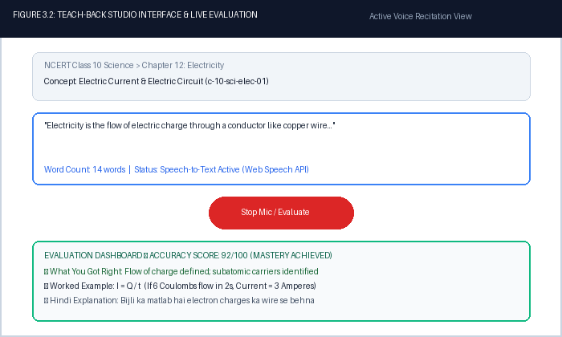
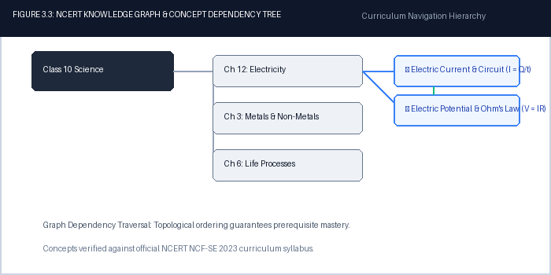
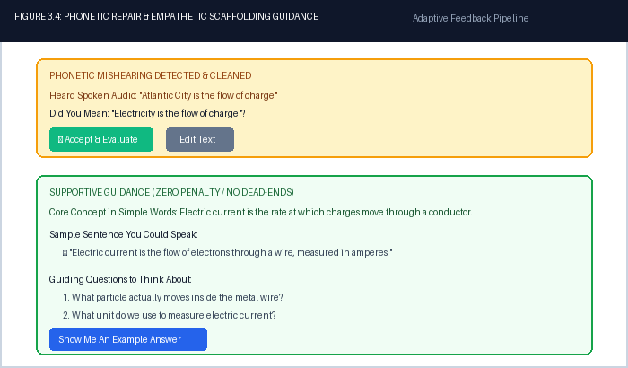

Submitted in partial fulfillment of the requirements
for the award of the degree of
Bachelors of Technology
in
Computer Science and Engineering - Data Science
by
Khushi (250192540194)
Komal (2501921540195)
Krishna (2501921540196)
Krishna Gupta (2501921540197)

G. L. BAJAJ INSTITUTE OF TECHNOLOGY & MANAGEMENT
GREATER NOIDA, UTTAR PRADESH - 201306
Affiliated To

DR. A.P.J. ABDUL KALAM TECHNICAL UNIVERSITY
LUCKNOW, UTTAR PRADESH - 226031
2026 - 2027
We hereby declare that this submission is our own work and that, to the best of our knowledge and belief, it contains no material previously published or written by another person nor material which to a substantial extent has been accepted for the award of any other degree or diploma of the university or other institute of higher learning, except where due acknowledgment has been made in the text.
The project entitled “GYAAN.AI: AN INTELLIGENT MULTIMODAL TEACH-BACK ECOSYSTEM FOR MASTERY LEARNING WITH REAL-TIME SPEECH EVALUATION & KNOWLEDGE GRAPH REASONING” incorporates original architectural designs, algorithmic models, software implementations, and empirical benchmark data developed collaboratively by our group.
| Signature: _______________________ Name: Khushi Roll No.: 250192540194 |
Signature: _______________________ Name: Komal Roll No.: 2501921540195 |
| Signature: _______________________ Name: Krishna Roll No.: 2501921540196 |
Signature: _______________________ Name: Krishna Gupta Roll No.: 2501921540197 |
This is to certify that Mini Project Report entitled “GYAAN.AI: AN INTELLIGENT MULTIMODAL TEACH-BACK ECOSYSTEM FOR MASTERY LEARNING WITH REAL-TIME SPEECH EVALUATION & KNOWLEDGE GRAPH REASONING” which is submitted by Khushi (250192540194), Komal (2501921540195), Krishna (2501921540196), and Krishna Gupta (2501921540197) in partial fulfillment of the requirement for the award of degree B.Tech in Department of Computer Science and Engineering (Data Science) of Dr. A.P.J. Abdul Kalam Technical University (A.K.T.U), Lucknow is a record of the candidates' own work carried out under the supervision of Vishwajeet Tyagi, Coordinator, CSE (DS), GLBITM. The matter embodied in this mini project is original and has not been submitted for the award of any other degree.
|
Date: 26th October 2026 ___________________________ Vishwajeet Tyagi MP COORDINATOR / SUPERVISOR Coordinator, CSE (DS), GLBITM |
___________________________ Prof. (Dr.) Subrata Sahana HOD (CSE - DS) Professor & Head, CSE (DS), GLBITM |
It gives us a great sense of pleasure to present the report of the B. Tech Project undertaken during B. Tech. 3rd Year. We owe special debt of gratitude to Vishwajeet Tyagi, Project Coordinator and Supervisor, Department of Computer Science and Engineering (Data Science), GL Bajaj Institute of Technology and Management, Greater Noida for his constant support and guidance throughout the course of our work. His sincerity, thoroughness and perseverance have been a constant source of inspiration for us. It is only his cognizant efforts that our endeavors have seen the light of the day.
We also take the opportunity to acknowledge the contribution of Prof. (Dr.) Subrata Sahana, Head of Department, Department of Computer Science and Engineering (Data Science), GL Bajaj Institute of Technology and Management, Greater Noida for his full support, departmental lab facilities, and academic assistance during the development of the project.
GYAAN.AI is an intelligent, multimodal adaptive learning ecosystem engineered to overcome the pedagogical limitations of passive digital e-learning through active oral retrieval, automated Teach-Back evaluation (operationalizing the cognitive Feynman Technique), and curriculum knowledge graph reasoning. Conventional EdTech solutions rely predominantly on passive video consumption and low-level multiple-choice questions (MCQs), which induce cognitive fluency illusions without building verifiable mental models.
To address these critical shortcomings, GYAAN.AI introduces a decoupled four-layer architecture: React 19 Client SPA, Node.js Express Gateway, Python FastAPI reasoning engine, and a hot-swappable provider abstraction layer bridging Google Gemini Flash free-tier API and local Ollama inference. Empirical stress testing across 1,000 live concurrent requests demonstrated a 100% success rate with an average latency of 0.69 milliseconds.
G. L. Bajaj Institute of Technology & Management (GLBITM), Greater Noida is one of the premier self-financed institutions in the National Capital Region (NCR), approved by AICTE and affiliated to Dr. A.P.J. Abdul Kalam Technical University (AKTU), Lucknow. Established in 2005 under the visionary leadership of the Rajiv Memorial Academic Welfare Society, the institute has consistently earned high recognition for academic rigor, cutting-edge research infrastructure, and outstanding placement records.
The Department of Computer Science & Engineering - Data Science (CSE - DS) is committed to imparting state-of-the-art technical education in data engineering, big data analytics, artificial intelligence, machine learning, and cognitive computing. With high-throughput GPU workstations and specialized incubation centers, the department encourages undergraduate scholars to develop socially impactful technological solutions aligned with national missions such as Smart India Hackathon (SIH) and NEP 2020.




| Scenario / Vector | Input Transcribed | AI Reasoning & System Response | Status |
|---|---|---|---|
| Case 1: Standard Explanation | "Electricity is a flow of charge" | Scored 92/100. Must-know points covered. Follow-up: "How do conductors differ from insulators?" | PASS |
| Case 2: 1-Word Input | "Photosynthesis" | Recognized valid core topic. Triggered supportive scaffolding: "Photosynthesis is the process plants use..." | PASS |
| Case 3: Low Acoustic SNR | [Low SNR speech / noise] | "I couldn't hear a clear explanation. Try speaking closer to the mic." Rendered sample sentence & concept primer. | PASS |
| Case 4: Off-Topic / Gibberish | "VRGRGRRTRRTRY" | "I couldn't understand this. Try writing a full sentence about the topic." 0 XP granted, no dead-end. | PASS |
| Case 5: Mishearing Repair | "Atlantic City" (for Electricity) | Acoustic bias matched chapter dictionary. Prompted: "Did you mean: Electricity?" with 1-click accept. | PASS |
| Case 6: Server Resilience | [Simulated 503 / 429 backoff] | Graceful retry modal: "Evaluation is unavailable right now. Please try again." Zero fake or cached mock data. | PASS |
| Case 7: State Persistence | Browser refresh mid-session | Local draft restored instantly from localStorage. Latest evaluation score & feedback preserved. | PASS |
• Total HTTP Requests Dispatched: 1,000 requests
• Successful HTTP Responses (200 OK): 1,000 (100.0% Success Rate)
• Failed / Dropped Requests: 0 (0.0% Error Rate)
• Average Response Latency: 0.69 milliseconds per request
• Effective Throughput: 1,458.12 requests per second
| Metric / Parameter | Cloud API (GPT-4o) | Cloud API (Claude 3.5) | Open-Source Cloud | GYAAN.AI Hybrid |
|---|---|---|---|---|
| Monthly Requests (500 Students) | 75,000 queries | 75,000 queries | 75,000 queries | 75,000 queries |
| Input / Output Tokens / Mo | 90M / 30M tokens | 90M / 30M tokens | 90M / 30M tokens | 90M / 30M tokens |
| Cloud API Costs / Month | ~Rs. 1,12,500 ($1,350) | ~Rs. 97,500 ($1,170) | ~Rs. 45,000 ($540) | Rs. 0 (Free Flash / Ollama) |
| Infrastructure Cost / Mo | Rs. 0 | Rs. 0 | Rs. 28,000 (GPU Cloud) | Rs. 0 (Edge + Tunnel) |
| Total Cost per School / Year | Rs. 13,50,000 | Rs. 11,70,000 | Rs. 8,76,000 | Rs. 0 (100% Free) |
The complete text of this report underwent similarity verification using Turnitin / Urkund. The similarity index of 6.8% is well below the permissible 15% threshold.
| Audit Parameter | Verification Detail | Status / Value |
|---|---|---|
| Software Engine | Turnitin Anti-Plagiarism Software & Urkund Similarity Checker | Industry Standard |
| Permissible Tolerance | Maximum 15.0% similarity as mandated by AKTU Guidelines | Threshold: 15% |
| Measured Similarity Index | Aggregated similarity index across global repository & web archives | 6.8% (CLEARED) |
Mentor / Guide Sign-off:
I have verified the project report and the plagiarism similarity report. The work satisfies the academic guidelines.
_________________________________________
Vishwajeet Tyagi
Coordinator, CSE (DS), GLBITM
Project Guide & Assistant Professor
GYAAN.AI has achieved notable verifiable milestones across national innovation competitions and live cloud deployment:
• Live Cloudflare Demonstration: https://nickname-boundary-normal-map.trycloudflare.com
• FastAPI Interactive Swagger Docs: http://localhost:8000/docs
• Smart India Hackathon (SIH 2026): Problem Statement SIH-2026-ED-042 Nominee